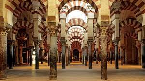

La mezquita-catedral de Córdoba,12 Santa María Madre de Dios» o «Gran mezquita de Córdoba», actualmente conocida como la Catedral de la Asunción de Nuestra Señora de forma eclesiástica, es un edificio de la ciudad de Córdoba, España. En 2019 superó los dos millones de visitantes, siendo su récord histórico y convirtiéndolo en uno de los monumentos más visitados de España.
Noticia 2
Se empezó a construir como mezquita en el año 784; hasta hace poco se creía que tras la apropiación por los conquistadores musulmanes de la basílica hispanorromana de San Vicente Mártir4 y la reutilización de parte de los materiales, quedando reservada al culto musulmán, pero los estudios arqueológicos más recientes descartan esta hipótesis.5 El edificio fue objeto de ampliaciones durante el Emirato de Córdoba y el Califato de Córdoba. Con 23 400 metros cuadrados, fue la segunda mezquita más grande del mundo en superficie, por detrás de la Mezquita de La Meca, siendo superada posteriormente por la Mezquita Azul (Estambul, 1588). El muro de la qibla no fue orientado hacia La Meca, sino 51º grados hacia el sur; esto era habitual en las mezquitas de al-Ándalus.
Noticia 3

La mezquita fundacional fue construida por Abderramán I, uno de los últimos miembros de la dinastía omeya que había conseguido escapar de Damasco tras la masacre de su familia durante la Revolución abasí y había derrotado al gobernador abasí Yusuf ibn Abd al-Rahman al-Fihri en Córdoba, instaurando el nuevo Emirato independiente en el 756.26 La construcción de la mezquita comenzó en 785 y terminó en menos de dos años.272829 Este periodo de tiempo tan reducido puede deberse a la reutilización de piezas (material de acarreo) romanas y visigodas, sobre todo columnas y capiteles.28 Se desconoce el arquitecto, aunque se han observado influencias sirias (omeyas), visigodas y romanas en el diseño del edificio. Entre los albañiles probablemente se encontraban locales y sirios de origen. Según la tradición y algunas fuentes escritas, Abderramán se encargó personalmente del proyecto, aunque se ha debatido hasta qué punto influyó su persona en el diseño de la mezquita.2428 La mezquita fundacional albergaba una forma casi cuadrada de 74 x 79 metros cuadrados, dividida entre el patio de abluciones (sahn) al norte y la sala de oración (haram) al sur.2428 Debido a que fue construida en pendiente, se tuvo que recurrir a una gran cantidad de relleno para crear el nivel necesario. La innovación arquitectónica más característica, que se ha repetido en edificios islámicos posteriores, ha sido la utilización de la doble arcada. Se ha especulado que Abderramán lo construyó de este modo porque le recordaba a un bosque de palmeras de su Siria natal; sin embargo, una motivación más técnica hubiera sido que las columnas reutilizadas no eran lo suficientemente altas.272829 Para darle estabilidad a este alzado se recurre a dobles arcos, de los cuales el inferior, de herradura, hace funciones de entibo, mientras que el superior, de medio punto, es el que soporta la cubierta. Este sistema, además de la alternancia cromática y material de las dovelas, rojas de ladrillo, amarillentas las de caliza, parece estar inspirado en el acueducto romano de Los Milagros (Mérida).2827 El mihrab original de la mezquita (nicho que indica la dirección del rezo) no se conserva actualmente, aunque es probable que sus restos fuesen encontrados en las excavaciones entre 1932 y 1936. El artefacto hallado mostraba la parte superior del mihrab con forma de concha, similar al posterior.24 La mezquita fundacional tenía cuatro entradas: una estaba en el centro del muro norte en el patio, dos en los muros oriental y occidental del patio y el cuarto se hallaba en medio del muro occidental dentro de la sala de oración. Esta última fue conocida como Bab al-Wuzara' (la puerta de los Visires, hoy conocida como puerta de San Esteban) y es probable que fuera la entrada usada por el emir y los oficiales estatales, que trabajaban en el Alcázar andalusí contiguo. Los muros exteriores se reforzaron con contrafuertes que pueden verse a día de hoy.28 Este primer edificio consta, en cualquier caso, de once naves longitudinales orientadas hacia el río Guadalquivir, cuya anchura es idéntica, a excepción de la central, que conduce al mihrab y las dos de los extremos. La central ligeramente más ancha que el resto y las laterales ligeramente más estrechas, aunque estas leves diferencias solo son apreciables en un plano. Estas naves constan de doce intercolumnios que corren en dirección al muro de la quibla. Orientación del muro de qibla Esquina suroeste, exterior del muro de la quibla Los muros de qibla de las mezquitas teóricamente deben estar orientados hacia La Meca, sin embargo, la Mezquita de Córdoba está orientada hacia al sur, mientras que La Meca se encuentra al sureste.3031 Esta orientación, a diferencia de las mezquitas actuales, se debe a las diferencias históricas de opinión sobre la dirección apropiada del muro de qibla en lugares islámicos más lejanos como al-Ándalus y Marruecos. En este periodo temprano, muchos musulmanes de la región preferían que la qibla estuviera mirando hacia el sur en lugar de mirar directamente hacia La Meca.32 Este hecho se basa en que el profeta Mahoma declaró que «entre el este y el oeste se encuentra la qibla», lo que legitimó las alineaciones hacia el sur.3334 Esta práctica también emulaba la orientación de los muros de la Kaaba de la Gran Mezquita de La Meca, basada en otra tradición que consideraba que los muros de la Kaaba se asociaban con las diversas localizaciones del mundo islámico. Según esta tradición, la cara norte de la Kaaba se asociaba a al-Ándalus y, por lo tanto, la Gran Mezquita de Córdoba se orientaba al sur como si mirara a la cara norte de la Kaaba.3031 A pesar de que mezquitas posteriores en al-Ándalus estuvieron orientadas hacia La Meca, por ejemplo, la mezquita de Medina Azahara del siglo x, las expansiones posteriores de la mezquita cordobesa no modificaron su orientación original.35 Otra teoría propuesta por el arqueólogo Pedro Marfil apunta a que las estructuras originales se adaptaron a los límites urbanísticos de la ciudad tardoantigua.36 Hipótesis del templo arriano Torre campanario que envuelve al alminar Plano con las diferentes ampliaciones de la Mezquita En el siglo xx, el escritor Ignacio Olagüe Videla en su célebre y controvertido libro La Revolución islámica en Occidente (1974), supone que Abderramán I no habría construido esta mezquita y que el templo primitivo ya contaba con el famoso bosque de columnas. Añade, además, que originalmente habría sido concebido para el culto arriano. Sin embargo esta postura, recogida en textos de divulgación,37 es rechazada por la investigación académica por carecer de pruebas y manipular los textos.38 Los estudios arqueológicos realizados en el lugar por el arquitecto Félix Hernández demuestran sin lugar a dudas el origen omeya del edificio, erigido sobre la basílica cristiana de San Vicente.39 Intervención de Hisham I El emir Hisham I terminó los trabajos inacabados tras el fallecimiento de Abderramán I, terminando el patio o sahn y erigió el primer alminar.2428 Este primitivo alminar, de planta cuadrada, fue más tarde derribado por Abderramán III quien construyó otro, luego parcialmente desmochado, y cuyos restos se cree que se encuentran actualmente embutidos en el campanario cristiano de la catedral. La cimentación del alminar de Hisham I fue hallada en el Patio de los Naranjos por el arqueólogo Félix Hernández en el siglo xx, quién dejó marcada su ubicación en el pavimento y es hoy día visible. Ampliación de Abderramán II Según la historiografía clásica, el crecimiento de la ciudad habría determinado la necesidad de un oratorio (haram) con un aforo mayor para poder albergar más fieles durante la celebración de los viernes, por lo que Abderramán II decidió la primera ampliación de la mezquita. Las obras comenzaron en 836 (aunque también se citan los años 833 y 848), acabándose en el 852, bajo mandato ya del hijo de Abderramán II, Muhammad I (r. 852-886).272428 Para llevarla a cabo se derribó el primitivo muro de la quibla, cuyos restos son actualmente visibles en forma de grandes pilares, y se prolongaron las arquerías en ocho tramos o crujías más, con una longitud total de 24 metros. Los elementos arquitectónicos son idénticos a los de la fase inicial: alternancia de dovelas en los arcos (amarillas de caliza y rojas de ladrillo) y utilización de materiales de acarreo, aunque como novedad se utilizaron algunos materiales labrados a propósito para esta ampliación, como los ocho capiteles novedosos denominados «de pencas». El mihrab, cuyos cimientos fueron encontrados en el subsuelo de la capilla de Villaviciosa, estaba concebido monumentalmente con un arco de entrada sostenido por cuatro columnas y sobresalía al exterior del muro de la qibla. También este emir llevó a cabo una intervención en el patio, cerrándolo con saqqifas en los laterales que faltaban. Otras intervenciones posteriores fueron las realizadas por Muhammad I, con la creación de la macsura, la restauración de la puerta de los Visires, actual puerta de San Esteban; su sucesor Al-Múndir (r. 886-888), quien dispuso un tesoro en la mezquita; mientras que el emir Abdalá (r. 888-912) construyó el primer sabat, un pasadizo elevado, que conectaba la macsura de la mezquita con el Alcázar andalusí al otro extremo de la calle.27 Intervención de Abderramán III En 929 Abderramán III instauró el nuevo Califato de Córdoba y consolidó el nuevo poder andalusí en la región. Como parte de sus variados proyectos constructivos, agrandó el patio de la Gran Mezquita y derribó el primer alminar y erigió uno nuevo comenzando entre 951-952.2428 El minarete o alminar tenía 47 metros de altura y una base cuadrada de 8,5 metros por lado.24 El erudito Jonathan Bloom ha sugerido que la construcción del minarete por Abderramán fue visto como un símbolo de la creciente autoridad del califa y un intento de rivalizar con el Califato fatimí al este.40 Abderramán también reforzó el muro norte del patio añadiendo otra fachada frente a la antigua.28 Fuentes históricas difieren sobre si el patio estaba porticado;41 algunos historiadores modernos afirman que el patio se porticó en esta época y se diseñó alternando pilares y columnas, tal y como puede verse actualmente. Las nuevas intervenciones, incluyendo el minarete, fueron completadas en 958, tal y como se evidencia en una placa de mármol que incluye el nombre de Abderramán III como maestro y supervisor de las obras.242728 Este alminar se conserva actualmente desmochado y embutido en el campanario cristiano, aunque se conoce su alzado gracias a los dibujos conservados. El único testimonio gráfico que nos ha llegado es un relieve que se encuentra en una de las enjutas de la Puerta de Santa Catalina.